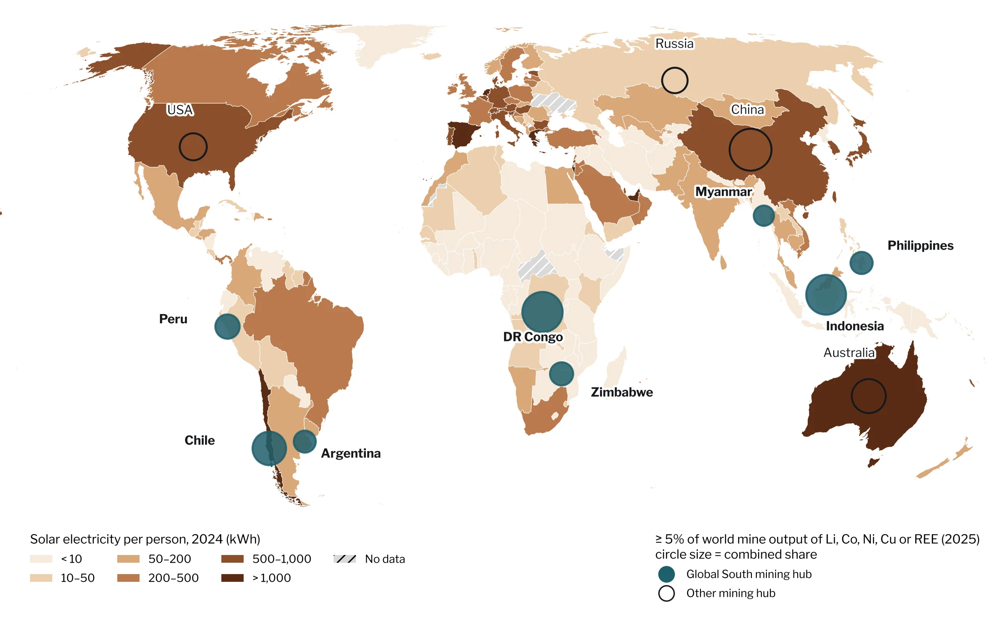

Lithium from the Atacama, cobalt from the Congo, solar power from the Sahara: the green transition is redrawing the world map of raw materials. Whether it repeats old North–South patterns or breaks them is not a question of geology. It is a question of politics.
Words: Eugenio MincioneAbout 16 minutes
Five materials of the transition: where they are mined, where they are refined
3LiLithiumMinedAustralia 32%, China 21%, Chile 19%RefinedChina
27CoCobaltMinedDR Congo 74%, Indonesia 14%RefinedChina
28NiNickelMinedIndonesia 67%, Philippines 7%RefinedIndonesia, China
29CuCopperMinedChile 23%, DR Congo 14%, Peru 12%RefinedChina 48%
60NdRare earthsMinedChina 69%, USA 13%, Australia 7%RefinedChina 85%
Mined: share of world mine production, 2025 estimates (USGS 2026). Refined: leading refiner (IEA 2025, 2026); copper refinery share from USGS (2026); rare earth refining share from IEA (2026). Neodymium (Nd) stands for the rare earths used in wind turbine and EV motor magnets.
The energy transition is usually told from its end: the electric car in the garage, the solar roof in the suburbs, the wind turbine on the horizon. But it also has a beginning, and that beginning rarely lies where its fruits are harvested. It lies in the salt flats of the Andes, in the copper-cobalt belts of Central Africa, in the nickel mines of Sulawesi. Where the materials of the future are pulled from the ground is where it will be decided whether the transition is a just one.
This article asks a simple question: who owns the energy transition? Who captures the value, who carries the costs, and who has the power to set the rules? The argument: decarbonisation risks repeating an old pattern in which the Global South supplies raw materials and land, while industry, know-how and profits end up elsewhere. Unlike in the fossil age, however, this pattern is not yet set in stone. Resource-rich states have new levers, and they are beginning to pull them.
Chapter 1
The new map of raw materials
When people talk about critical minerals, they think of mines first. The real bottleneck, though, sits one step further down the chain, in refining. According to the International Energy Agency, China is the leading refiner for 19 of the 20 strategic minerals it analyses, with an average market share of around 70 per cent. For key energy minerals, the three largest refining countries held 86 per cent of the market on average in 2024, up from around 82 per cent in 2020; for mining, the top three held 77 per cent (IEA 2025). The 2026 edition shows the trend continuing: the average share of the single largest refining country rose from 70 per cent in 2023 to 72 per cent in 2025 (IEA 2026).
What stands out is the direction of travel. Despite billion-dollar programmes in the West, concentration in processing has recently grown rather than shrunk. Only for rare earths is a shift visible: new capacity in the United States and Malaysia pushed the dominant supplier's share from above 90 per cent (2023) to 85 per cent (2025), and the IEA considers around 70 per cent possible by 2035 if planned projects go ahead (IEA 2026).
Figure 1
Mining is spread out, refining is concentrated
Market share of the three largest countries, average across six key minerals
Mining, 2024
77%
Refining, 2020
82%
Refining, 2024
86%
19 of 20
strategic minerals are refined mainly in China, with an average share of ~70%
90 → 85 → 70
Largest supplier's share of rare earth refining, in per cent: 2023, 2025, projection for 2035
Sources: IEA (2025), Global Critical Minerals Outlook 2025 (bars, 19 of 20); IEA (2026), Global Critical Minerals Outlook 2026 (rare earths; the 2023 value is reported as “over 90%”).
For the question of inequality, this distinction is central. Raw materials are extracted wherever geology happened to leave them. Value, by contrast, is created wherever capital, technology and industrial policy steer it. The geographers Gavin Bridge and Erika Faigen therefore argue that batteries should not be thought of as a linear supply chain but as a global production network in which firms, states and research institutions compete for position (Bridge & Faigen 2022). In that network, the mine is the weakest position: capital-intensive, prone to conflict, and holding the smallest share of the final price.
Figure 2
Where the value sticks
Stage 1
Extraction
Chile, Argentina, DR Congo, Indonesia, Australia. Highest local risks, smallest share of the final price.
→
Stage 2
Refining
Highly concentrated, mostly China; Indonesia for nickel. The real bottleneck.
→
Stage 3
Cells & modules
Battery cells, solar modules: in 2022 China held over 80% of every solar PV manufacturing stage.
→
Stage 4
End product
EVs, storage, grids. Brands, patents and consumption sit mostly in China, Europe and the US.
Schematic after Bridge & Faigen (2022); shares: IEA (2022b, 2025).
Chapter 2
Green extractivism
The social and environmental costs of extraction are unevenly distributed, and systematically so. A study by Lèbre et al. (2020) in Nature Communications, which assesses mining projects for 20 metals against environmental, social and governance risks, finds that 70 per cent of cobalt resources and 84 per cent of platinum resources lie in high-risk contexts. Owen et al. (2023) geolocated 5,097 energy transition mineral projects and overlaid them with land-tenure data: more than half of the resource base lies on or near the lands of Indigenous and peasant peoples, groups whose right to free, prior and informed consent is enshrined in United Nations declarations.
>50%
of the resource base for energy transition minerals lies on or near the lands of Indigenous and peasant peoples.
Owen et al. 2023, n = 5,097 projects
70%
of cobalt resources lie in contexts with high environmental, social and governance risk.
Lèbre et al. 2020
Taking the “Lithium Triangle” of Chile, Argentina and Bolivia as their case, Voskoboynik and Andreucci (2022) describe how state and corporate actors legitimise extraction through discourse: old promises of prosperity and modernisation are fused with new images of high technology, green jobs and climate-friendly mining. They call this green extractivism, a form of intensive resource exploitation framed not only as compatible with climate action but as a precondition for it. Fieldwork in the Puna de Atacama shows that brine evaporation is entangled with conflicts over water and Indigenous rights, and that communities are far from united in how they judge the lithium boom (Blair et al. 2023).
In the DR Congo, which supplied about three quarters of the world's mined cobalt in 2025 (USGS 2026), the picture is harsher still. Drawing on interviews and visits to dozens of mining sites, Benjamin Sovacool documented real benefits such as income and local development, but also severe harms: accidents, pollution, damage to health and violent conflict (Sovacool 2019). With colleagues, he describes this spatial displacement of burdens as a “decarbonisation divide”: the clean technologies of the North rest on degraded landscapes of extraction and waste in the South (Sovacool et al. 2020). Calvão et al. (2021) further show how companies outsource responsibility by drawing in artisanal miners who work without fixed wages.
Atlas
Four frontiers of the transition
23.5° S · 68.3° WSalar de AtacamaChile · LithiumBrine evaporation in one of the driest places on Earth; conflicts over water and Indigenous rights.
10.7° S · 25.5° EKolwezi, LualabaDR Congo · Cobalt, copperHeart of the Copperbelt; industrial pits beside artisanal mining with severe health risks.
2.8° S · 122.1° EMorowali, SulawesiIndonesia · NickelIndustrial park for nickel smelting that grew after the 2020 ore export ban.
31.0° N · 6.9° WOuarzazateMorocco · SolarThe Noor complex: a national flagship, planned with little involvement of local communities.
Approximate coordinates. Sources: Blair et al. (2023); Sovacool (2019); Santoso et al. (2024); Rignall (2016); Haddad (2022).
Chapter 3
The sun as a resource
Inequality is not only about metals but also about land and energy itself. According to the IEA, Africa holds 60 per cent of the world's best solar resources but only around 1 per cent of installed solar PV capacity (IEA 2022a). The reason is not a lack of sunshine but expensive capital: the IEA puts the cost of financing renewables in Africa at two to three times that of advanced economies (IEA 2024).
Figure 3
Africa's solar paradox
Share of the world's best solar resources60%
Share of the world's installed solar PV capacity~1%
Cost of capital for renewables vs. advanced economies2–3×
Sources: IEA (2022a), Africa Energy Outlook 2022; IEA (2024), Clean Energy Investment for Development in Africa.
Where large solar projects are built, the distributional question returns in a new form. Morocco's Noor complex near Ouarzazate is held up as a flagship. The anthropologist Karen Rignall studied its origins and showed that the energy transition there is as much a political project as a geographic one: it reshapes land use and power relations without automatically replacing the centralised forms of state control that sustained the fossil regime (Rignall 2016). Haddad (2022) describes how local communities were barely involved in planning and implementation and had to fight for a share of the benefits.
Then there is the industrial side: according to the IEA, China's share of every manufacturing stage of solar modules, from polysilicon to the finished panel, exceeded 80 per cent in 2022 (IEA 2022b). The sun may shine in the South, but the factories stand elsewhere.
Illustration: rings of mirrors around a solar tower, as at the Noor complex near Ouarzazate, Morocco.
UNEVEN Analysis · Original GIS study
Mapping the mismatch
To test this article's central argument with data, I combined three open datasets in a GIS: country borders from Natural Earth, solar electricity generation and population for 2024 from Our World in Data (based on Ember and the Energy Institute), and mine production for 2025 from the US Geological Survey (Natural Earth 2024; Our World in Data 2025; USGS 2026). A country counts as a mining hub if it produces at least 5 per cent of world mine output of lithium, cobalt, nickel, copper or rare earths. Twelve countries meet that threshold. Eight of them lie in the Global South: DR Congo, Indonesia, Chile, Peru, Zimbabwe, the Philippines, Argentina and Myanmar. The other four are China, Australia, the United States and Russia.

Figure 4 · Solar electricity per person, 2024, and critical mineral mining hubs, 2025. Equal Earth projection. Data: Natural Earth (2024); Our World in Data (2025), based on Ember and Energy Institute; USGS (2026). Analysis and map: Eugenio Mincione.
90%
of the world's cobalt, 74% of its nickel, 52% of its copper and 37% of its lithium come from the eight Global South hubs
1.5%
of the world's solar electricity is generated there, for 8.3% of the world's population
20 vs 610
kWh of solar electricity per person: median hub vs median EU member state
18.5% / 1.7%
Africa's share of world population vs. its share of world solar generation
The result is stark. Together, the eight Global South hubs mined 90 per cent of the world's cobalt, 74 per cent of its nickel, 52 per cent of its copper and 37 per cent of its lithium in 2025. Yet in 2024 they generated only 1.5 per cent of the world's solar electricity, while housing 8.3 per cent of its population. The median hub produced around 20 kWh of solar electricity per person, against about 610 kWh in the median EU member state. Africa as a whole, home to 18.5 per cent of humanity, generated 1.7 per cent of the world's solar power, which is consistent with the IEA's estimate that the continent holds around 1 per cent of installed capacity (IEA 2022a).
The exception is instructive. Chile, whose Atacama Desert receives some of the strongest sunshine on Earth, generated more than 1,000 kWh of solar electricity per person, more than Germany. Mining the transition and using it do not have to diverge. Where grids, capital and policy line up, a mining country can also become a solar country.
Method and limits. Country-level join of the three datasets in Python (GeoPandas), mapped in the Equal Earth projection (EPSG:8857). Solar output measures electricity generated, not installed capacity or physical potential. 47 mostly small territories lack solar data. “Global South hubs” here means the eight hubs outside the high-income OECD, excluding China and Russia, which play distinct roles as the main refining hub and as a major power. Mine production figures are USGS estimates for 2025 and may be revised. The analysis describes correlation at country level; it does not show causation.
Chapter 4
Unequal exchange, reissued
Why does this pattern keep repeating? The suspicion that trade in raw materials systematically favours the industrialised world is old. In 1950, Raúl Prebisch and Hans Singer argued, independently of each other, that the prices of primary commodities tend to fall over the long run relative to the prices of manufactured goods (Prebisch 1950; Singer 1950). Countries that export ore and import machines would have to export ever more to buy the same. The Prebisch–Singer hypothesis has been debated ever since, and commodity booms regularly seem to refute it. Yet it shaped a generation of development policy, from import substitution in Latin America to today's calls for local value addition.
Environmental scholars have extended the argument. The human ecologist Alf Hornborg proposed that unequal exchange is not only a matter of prices but of matter and energy: industrial centres import more resources, land and labour than they export, and accumulate the capacity to keep doing so (Hornborg 1998). This ecologically unequal exchange stays invisible as long as trade is measured in money alone.
Hickel et al. (2022) tried to make it visible. Using environmentally extended input-output data, they calculated how many resources and how much labour flow, in net terms, from the Global South to the North. For 1990 to 2015 they put this drain at 242 trillion US dollars (in constant 2010 prices), and at 10.8 trillion dollars in Northern prices for 2015 alone. The method is contested among economists because it rests on a particular way of valuing price differences. The underlying observation, that raw material exporters structurally retain less of the value created, is far less controversial.
Whoever supplies only the ore holds the part of the chain where the least value sticks, and carries the greatest risks.
The energy transition can sharpen this mechanism. Critical minerals are indispensable to the world economy, yet they account for only about 3 per cent of the price of an average electric vehicle, even though they make up around a quarter of battery cell costs (IEA 2026). At the same time, mineral prices are notoriously volatile. Cobalt fell to a nine-year low in early 2025, before Congo's export halt sent prices sharply up again (Reuters 2025). For economies that depend on a handful of commodities, such swings translate directly into budget crises.
Research on the resource curse has long described how dependence on minerals can weaken institutions, crowd out other sectors and concentrate rents in few hands (Auty 1993). The producing countries' dilemma is therefore twofold: they capture little of the value, and the little they capture is unstable. Breaking out of it requires more than higher prices. It requires a different position in the network.
Chapter 5
The North brings the mines home
In recent years, industrialised countries have responded with a strategy the political scientist Thea Riofrancos calls the “security–sustainability nexus”: governments that offshored mining for decades are bringing it back in the name of supply security, while justifying it with the higher environmental standards they claim at home (Riofrancos 2023). State and industry pull in the same direction, but the tensions within this nexus expose the contradictions of green capitalism.
In 2024 the EU wrote this logic into law. The Critical Raw Materials Act (Regulation (EU) 2024/1252) sets benchmarks for strategic raw materials by 2030 (European Union 2024):
10%
of annual consumption extracted within the EU
40%
processed within the EU
25%
from recycling
≤ 65%
from any single third country, at each stage of processing
For countries in the Global South, this cuts both ways. Diversification can mean new partnerships and investment. But the EU is pursuing its own resilience first. Whether partner countries gain refineries and manufacturing or keep exporting only ore is not settled by the regulation. It is a matter of negotiation.
Chapter 6
The counter-move: resources as leverage
The most interesting development of recent years is unfolding in the South itself. Resource-rich states are actively trying to improve their position in the network, with very different tools and results.
Figure 6 · Three strategies
Indonesia · Nickel
Export ban
67%
share of world mined nickel, 2025
Since 2020, nickel ore may no longer be exported, a move framed as asserting sovereignty over resources. Domestic smelting grew rapidly, mostly with Chinese investment. A gain in value added, but also new dependencies and a market glut.
Chile · Lithium
State stake
50% + 1
Codelco's share in the joint venture with SQM, to 2060
The National Lithium Strategy (2023) puts the Salar de Atacama under majority state ownership. Critics see a concession to the private sector. Chile now ranks third in mined lithium, with about 19% in 2025.
DR Congo · Cobalt
Export quotas
96,600 t
permitted exports per year, 2026 and 2027
After prices slumped, Kinshasa temporarily banned exports in February 2025 and replaced the ban with quotas in October, capping exports well below 2024 mine output.
Sources: USGS (2026); Santoso et al. (2024); S&P Global (2026, industry data); Gobierno de Chile (2023, 2024); Reuters (2025).
Illustration: the terraces of an open-pit copper-cobalt mine in Lualaba province near Kolwezi, DR Congo.
These cases show that resource nationalism is back. Whether it reduces inequality depends on who benefits from the extra revenue: local communities and workers, or mainly national elites and foreign partners.
Chapter 7
What a just transition would take
The energy transition is necessary if climate targets are to be met. That is exactly why the question of who owns it is not an academic one. The research points to at least four starting points.
01
Value added at the source
Partnerships should enable refining and manufacturing in producing countries, not just secure ore. Final prices would barely rise (IEA 2026).
02
Consent, not consultation
Free, prior and informed consent must become binding wherever projects touch Indigenous and peasant land (Owen et al. 2023).
03
Cheaper capital
As long as renewables cost two to three times more to finance in Africa, the world's largest solar potential stays untapped (IEA 2024).
04
Less material demand
Recycling, efficiency and a transport shift that does not simply swap every combustion car for an electric one take pressure off mining regions.
Conclusion
A map still being drawn
So who owns the energy transition? On the evidence gathered here, the answer today is: mainly those who control the middle and the end of the chain. Refining is more concentrated than mining and has become more so (IEA 2025, 2026). The eight Global South mining hubs analysed here supply most of the world's cobalt and nickel, yet generate only a tiny fraction of its solar electricity. The social and ecological burdens fall disproportionately on places with weak governance and on the lands of Indigenous and peasant peoples (Lèbre et al. 2020; Owen et al. 2023). And the continent with the best solar resources holds only a sliver of the world's installed capacity (IEA 2022a). In that sense, the transition risks reissuing the old geography of core and periphery, only in green.
But the analysis also shows why this outcome is not inevitable. Unlike the fossil age, the clean energy economy is still being built, and its rules are being written now: in the EU's Critical Raw Materials Act, in Chile's lithium strategy, in Indonesia's export ban and in Congo's quotas. None of these instruments guarantees fairness. Indonesia shows that value added at home can come with new dependencies and environmental damage; Chile shows that state ownership can mean compromise with incumbents. What they share is the insight that a country's position in the network is a matter of politics, not geology.
Three questions will decide the outcome. Will producing countries gain refining and manufacturing, not just mines? Will affected communities be able to say no, rather than merely be heard? And will capital for clean energy flow to where the sun and the minerals are? For a geography of the transition, this means looking beyond the electric car and the solar roof to the salt flats, pits and smelters where the future is being dug up.
The map of the energy transition has not been fully drawn yet. Whether it extends the old geography or makes room for a new one will be decided over the next ten years, in negotiating rooms in Brussels and Beijing as much as on the salt flats of the Atacama. ■
Eugenio Mincione studies geography, specialising in geoinformatics and applied physical geography, alongside political science at LMU Munich.
References
This article draws on peer-reviewed research, official statistics (USGS, IEA), EU legislation and open datasets. The two remaining news and industry sources are marked as such. Production shares are calculated from USGS 2025 estimates. The GIS analysis, illustrations and graphics are original. Citation style: APA 7.
Auty, R. M. (1993). Sustaining development in mineral economies: The resource curse thesis. Routledge.
Blair, J. J. A., Balcázar, R. M., Barandiarán, J., & Maxwell, A. (2023). The 'alterlives' of green extractivism: Lithium mining and exhausted ecologies in the Atacama Desert. International Development Policy, 16. doi:10.4000/poldev.5284
Bridge, G., & Faigen, E. (2022). Towards the lithium-ion battery production network: Thinking beyond mineral supply chains. Energy Research & Social Science, 89, 102659. doi:10.1016/j.erss.2022.102659
Calvão, F., Mcdonald, C. E. A., & Bolay, M. (2021). Cobalt mining and the corporate outsourcing of responsibility in the Democratic Republic of Congo. The Extractive Industries and Society, 8(4), 100884. doi:10.1016/j.exis.2021.02.004
European Union (2024). Regulation (EU) 2024/1252 of the European Parliament and of the Council of 11 April 2024 establishing a framework for ensuring a secure and sustainable supply of critical raw materials. Official Journal of the European Union, L 2024/1252.
Gobierno de Chile (2023). Estrategia Nacional del Litio. Santiago de Chile.
Gobierno de Chile (2024). Histórico: Estado tendrá participación del 50,1% para producción del litio en Chile. Marca Chile. marcachile.cl
Haddad, C. (2022). Imagined inclusions into a 'green modernisation': Local politics and global visions of Morocco's renewable energy transition. Third World Quarterly, 43(2), 393–413. doi:10.1080/01436597.2021.2014315
Hickel, J., Dorninger, C., Wieland, H., & Suwandi, I. (2022). Imperialist appropriation in the world economy: Drain from the global South through unequal exchange, 1990–2015. Global Environmental Change, 73, 102467. doi:10.1016/j.gloenvcha.2022.102467
Hornborg, A. (1998). Towards an ecological theory of unequal exchange: Articulating world system theory and ecological economics. Ecological Economics, 25(1), 127–136.
IEA (2022a). Africa Energy Outlook 2022. International Energy Agency, Paris.
IEA (2022b). Special Report on Solar PV Global Supply Chains. International Energy Agency, Paris.
IEA (2024). Clean Energy Investment for Development in Africa. International Energy Agency, Paris.
IEA (2025). Global Critical Minerals Outlook 2025. International Energy Agency, Paris. iea.org
IEA (2026). Global Critical Minerals Outlook 2026. International Energy Agency, Paris. iea.org
Lèbre, É., Stringer, M., Svobodova, K., Owen, J. R., Kemp, D., Côte, C., Arratia-Solar, A., & Valenta, R. K. (2020). The social and environmental complexities of extracting energy transition metals. Nature Communications, 11, 4823. doi:10.1038/s41467-020-18661-9
Our World in Data (2025). Energy dataset (owid/energy-data), based on Ember (2025) Yearly Electricity Data and Energy Institute (2025) Statistical Review of World Energy. github.com/owid/energy-data
Owen, J. R., Kemp, D., Lechner, A. M., Harris, J., Zhang, R., & Lèbre, É. (2023). Energy transition minerals and their intersection with land-connected peoples. Nature Sustainability, 6, 203–211. doi:10.1038/s41893-022-00994-6
Prebisch, R. (1950). The economic development of Latin America and its principal problems. United Nations, Economic Commission for Latin America.
Reuters (2025, September 21). Congo to replace cobalt export ban with quotas from Oct 16. [Press source, used only for the price context.]
Rignall, K. E. (2016). Solar power, state power, and the politics of energy transition in pre-Saharan Morocco. Environment and Planning A, 48(3), 540–557. doi:10.1177/0308518X15619176
Riofrancos, T. (2023). The security–sustainability nexus: Lithium onshoring in the global North. Global Environmental Politics, 23(1), 20–41. doi:10.1162/glep_a_00668
S&P Global Commodity Insights (2026, August 13). Infographic: Indonesia's shifting policies drive market volatility. [Industry source.]
Singer, H. W. (1950). The distribution of gains between investing and borrowing countries. American Economic Review, 40(2), 473–485.
Santoso, R. B., Dermawan, W., & Moenardy, D. F. (2024). Indonesia's rational choice in the nickel ore export ban policy. Cogent Social Sciences, 10(1). doi:10.1080/23311886.2024.2400222
Sovacool, B. K. (2019). The precarious political economy of cobalt: Balancing prosperity, poverty, and brutality in artisanal and industrial mining in the Democratic Republic of the Congo. The Extractive Industries and Society, 6(3), 915–939. doi:10.1016/j.exis.2019.05.018
Sovacool, B. K., Hook, A., Martiskainen, M., Brock, A., & Turnheim, B. (2020). The decarbonisation divide: Contextualizing landscapes of low-carbon exploitation and toxicity in Africa. Global Environmental Change, 60, 102028. doi:10.1016/j.gloenvcha.2019.102028
Voskoboynik, D. M., & Andreucci, D. (2022). Greening extractivism: Environmental discourses and resource governance in the 'Lithium Triangle'. Environment and Planning E: Nature and Space, 5(2), 787–809. doi:10.1177/25148486211006345
U.S. Geological Survey (2026). Mineral commodity summaries 2026. USGS. pubs.usgs.gov